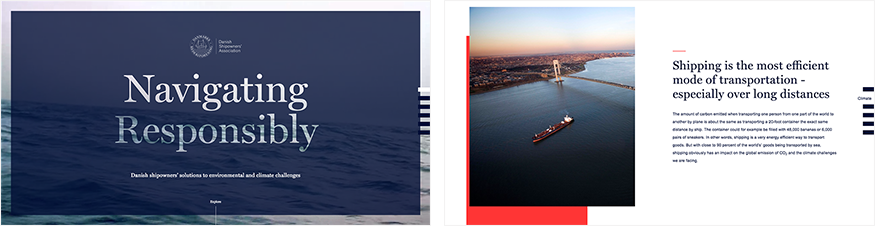
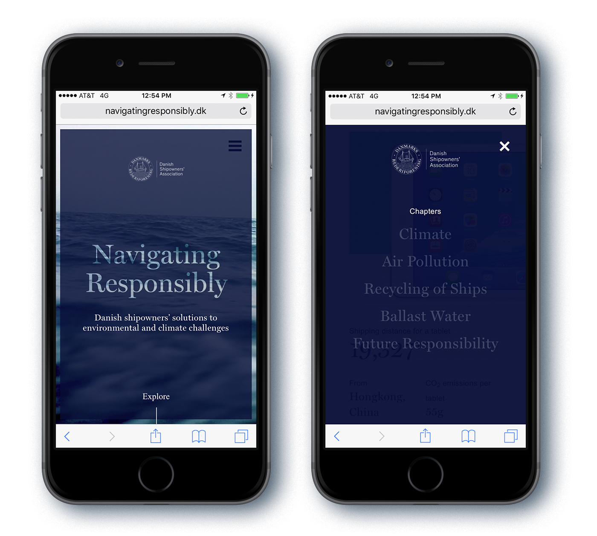
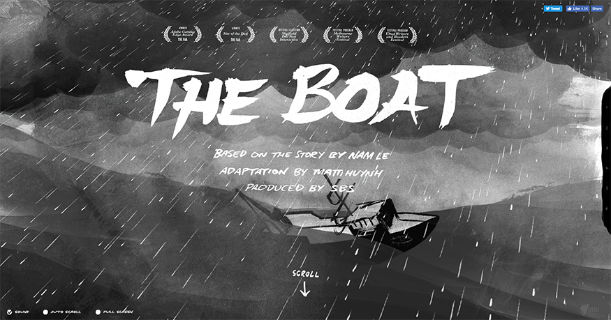
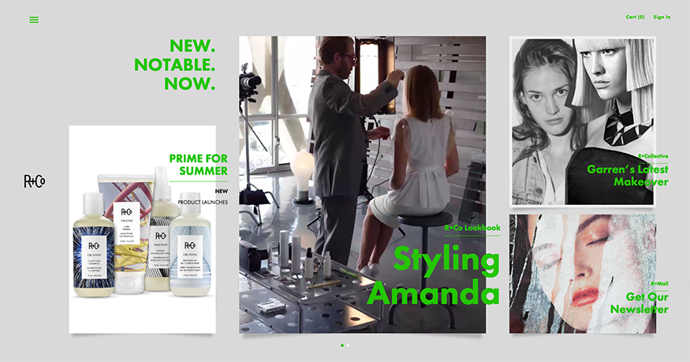
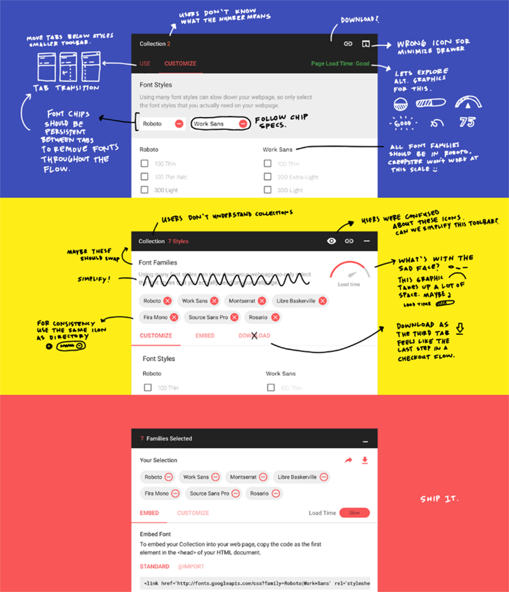

CHANTEL ZAPATA
UX Designer
In today’s Internet Age where everything is shareable and potentially viral,
us designers constantly come across
new things that inspire us to push past boundaries in our work.
Yet, how do you make sure that your project is
not just visually fresh but actually works for your target user?
How do you get a user to embrace new UX and UI patterns without sacrificing
the experience and functionality?
Here are four questions to ask yourself before you follow a trend:
1. IS IT RIGHT FOR THE PROJECT?
Just because we see it everywhere – and even if it becomes a common
UX pattern – that doesn’t mean it’s right
for the project.
A perfect example is the controversial hamburger menu. It’s commonplace and creates an
aesthetically pleasing interface. Yet, it can hamper
discoverability and leave the user feeling alienated. By fully
understanding conversion goals and breadth of content,
it will become clear whether following this trend is
appropriate.
The Danish Shipowners Association’s Navigating Responsibility ,
for example, uses a hamburger nav because
their experience is exploratory. Users primarily navigate their content by scrolling down the
page, so having the navigation constantly visible is not needed.
They’ve also very cleverly adapted this common pattern to
complement the interaction in their desktop experience where
screen real estate is not at a premium.

Navigating Responsibility Desktop Site
Navigating Responsibility Desktop Site
2. HOW WILL THIS AFFECT METRICS AND PERFORMANCE?
Metrics and performance indicators are table stakes for all clients,
just as page load time and page weights are
important to the user. Parallax scrolling is a great example
of how a brilliant storytelling tool, which used
appropriately on sites like The Boat, may negatively impact SEO, make for
a poor user experience (especially for mobile users) with long page load times,
and even cause motion sickness! A deep understanding of what
devices will be used most, type and length of content, as well
as the how metrics may be impacted will help you
decide what’s right for the experience you are designing.

The Boat Desktop Site
3. HAS MY USER ENCOUNTERED THIS TREND BEFORE?
The keyword here is MY user. Of course you’ve seen
this pattern and your colleagues have too, otherwise it
wouldn’t be considered a trend. But, if your target user
hasn’t and you don’t provide refined microinteractions
and implement appropriate error prevention, it’ll all be
for naught. Creating strong user personas based on
research and interviews will help you empathize with your user,
get into their mindset, and fully understand the
UX and UI patterns they are comfortable with.
Before launching the site for R+Co, we worked hard to
get to know the end user to determine their needs and understand
what an enriching experience means to them. We
implemented defined microinteractions to guide the user
through the horizontal scroll. The result is an
engaging, immersive visual experience, that echoes the
attitude and style of these rule-bending hairstylists.

R+Co Desktop Site
4. WHAT DOES MY USER ACTUALLY THINK OF THIS?
The only way to find out if the trend in question will
work for your user is to test and test and test. Testing at
lower fidelities early and often provides validation and
highlights issues. And interestingly enough, this can
actually help you be a trendsetter as opposed to just a follower,
since you’ll be in a pattern of finding newer and
better solutions. Really allowing yourself to experience
things through the user’s eyes can lead you to uncover a
new, innovative solution or pattern. The recently refreshed Google
Fonts is a lovely example of understanding
and researching the users needs and developing a product
that was, as you know, welcomed with open
(I’m a huge fan!). Take a peek into their process.

Google Fonts Process Courtesy of Google Design
Ultimately, trends come and go, but if you keep the user’s goal as
focal point, you’ll know best what to
implement and you’ll be that much further in creating
an effective and memorable experience.
Jerry Cao at UXPin says it best: “Trends are nothing more
than additional tools in your designer toolbox. Always
pick the right ones for the job.”